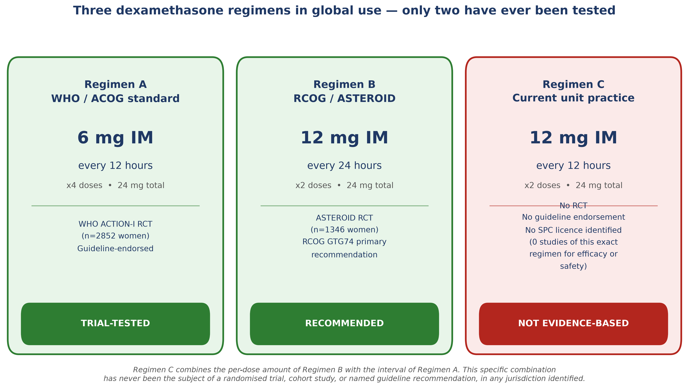
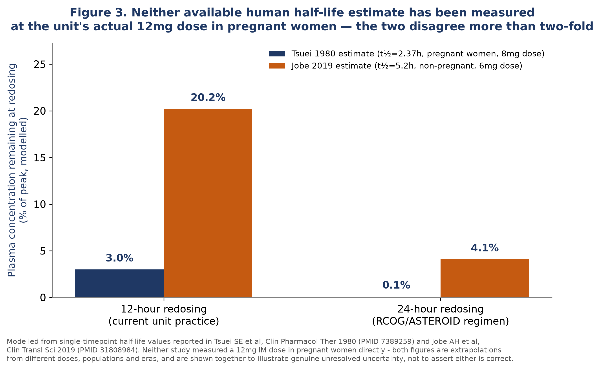
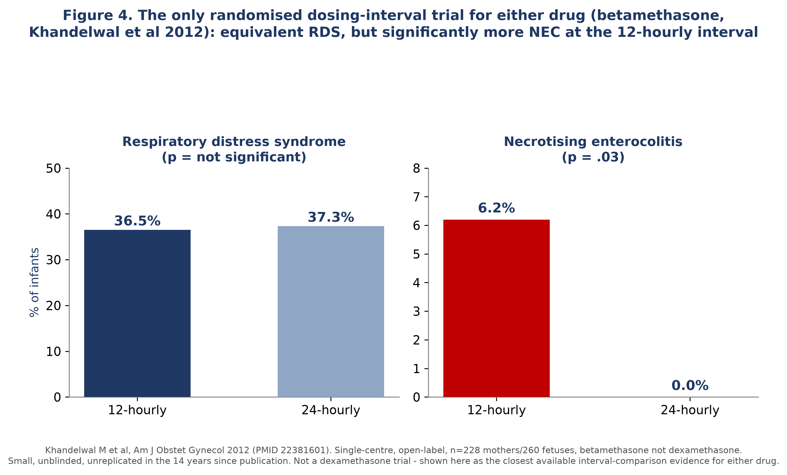
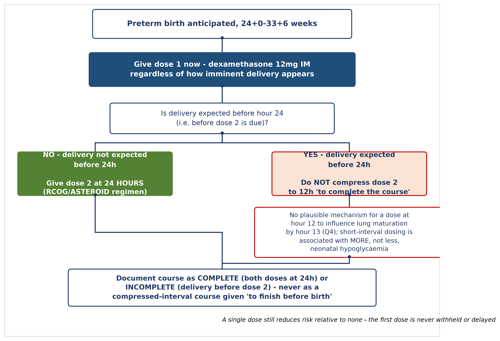

The case for discontinuing the unlicensed 12 mg 12-hourly regimen in favour of the RCOG/ASTEROID-tested 12 mg 24-hourly schedule
Prepared for departmental review and clinical governance discussion. Author and unit details to be completed by the submitting clinician.
Adopt dexamethasone 12 mg IM, two doses, 24 hours apart — the regimen named in RCOG Green-top Guideline No. 74 and tested in the ASTEROID trial — as the unit's standard, in place of the current practice of giving the same 12 mg dose at a compressed 12-hour interval.
This is not a claim that the current practice has been shown to cause harm. It is a claim, supported by a systematic search of the trial, guideline, and pharmacological literature, that the current practice has never been shown to be safe or effective either — it sits entirely outside the evidence base that justifies antenatal corticosteroid use in the first place. Where a tested, guideline-endorsed alternative exists at no cost to the woman or her baby, that absence of evidence is itself sufficient reason to change practice.

Antenatal corticosteroids are one of the most consistently effective interventions in perinatal medicine, and this document does not question that. The question is narrower and more specific: when dexamethasone is the chosen agent, and 12 mg is the chosen per-dose amount, should the two doses be given 12 hours apart, as is current practice in this unit, or 24 hours apart, as recommended by the Royal College of Obstetricians and Gynaecologists?1
This document was produced through a systematic search of PubMed and academic literature databases for trials, systematic reviews, cohort studies, and pharmacokinetic data addressing dexamethasone regimen and dosing interval specifically, cross-checked against RCOG, WHO, and European guideline positions. Every reference cited carries a verified PMID and/or DOI. Every clinical claim is labelled with its certainty, and mechanistic or pharmacological reasoning is explicitly distinguished from direct clinical trial evidence throughout. The full evidence synthesis, including sections not reproduced here in full (maternal glycaemic management, the imminent-delivery scenario, and a complete GRADE summary table), is available as a companion document.
RCOG Green-top Guideline No. 74 names two dexamethasone options, both totalling 24 mg: 12 mg IM twice, 24 hours apart (matching the ASTEROID trial, the largest and best-characterised head-to-head comparison against betamethasone), or 6 mg IM four times, 12 hours apart (matching the WHO/ACOG standard and the WHO ACTION-I trial).1,2,3 Neither RCOG, the WHO 2022 recommendation, ACOG guidance, nor a 2023 European perinatal-care consensus statement names a third option combining the 12 mg per-dose amount with a 12-hourly interval.13
This is confirmed, not assumed. The 2022 Cochrane review dedicated specifically to comparing antenatal corticosteroid regimens identifies only three studies anywhere in the global trial base that compare any regimen variant of any agent — and states plainly that the evidence "does not support the use of one particular corticosteroid regimen over another."14 None of the three concerns dexamethasone interval. One compares betamethasone at 12-hourly versus 24-hourly intervals, rated very-low certainty.7 A search of six independent strategies in this review found no RCT, no comparative cohort, and no study of any design comparing dexamethasone 12 mg at a 12-hourly interval against 24-hourly, for any outcome.
A fair reading of the record shows the regimen has real clinical precedent: a UK protocol paper (Salford, 2003) and a Malaysian trial (2021) both describe this exact schedule as the background ACS practice at their respective institutions.15,16 Neither paper tested the regimen's own efficacy or safety — both simply used it as the fixed backdrop while studying something else (glycaemic control). The regimen has therefore persisted in scattered international practice for at least two decades without ever itself being the subject of a trial measuring respiratory outcome, brain injury, or survival against the tested alternative. That longevity is not evidence of safety; it is a description of how an untested practice can become routine.
| Regimen A — WHO/ACOG | Regimen B — RCOG/ASTEROID (recommended) | Regimen C — current unit practice | |
|---|---|---|---|
| Dose per injection | 6 mg IM | 12 mg IM | 12 mg IM |
| Interval | Every 12 hours | Every 24 hours | Every 12 hours |
| Doses / total | 4 doses / 24 mg | 2 doses / 24 mg | 2 doses / 24 mg |
| Trial evidence | WHO ACTION-I, n=2852 | ASTEROID, n=1346 | None identified |
| Guideline status | WHO/ACOG endorsed | RCOG primary recommendation | Not named by any guideline identified |
The intuitive explanation sometimes offered for tolerating a compressed dexamethasone interval — that betamethasone's own 24-hourly interval reflects a slow-release depot mechanism dexamethasone lacks, so betamethasone's interval logic simply doesn't transfer — turns out to rest on a factual error about the UK preparation. Betamethasone as used in the UK is confirmed to be the plain sodium phosphate ester, without the acetate depot fraction found in the US Celestone Chronodose product.4 The two drugs are, in the UK, pharmacokinetically more alike than commonly assumed: both are non-depot phosphate esters, and the genuine distinguishing factor is that betamethasone phosphate clears roughly twice as slowly as dexamethasone phosphate.4,17,18
This does not settle the interval question — it sharpens it. Two human pharmacokinetic datasets give discordant dexamethasone half-life estimates that disagree by more than two-fold (2.37 hours in pregnant women near term at an 8 mg dose, versus 5.2 hours in non-pregnant women at a 6 mg dose), and neither has ever been measured at the unit's actual 12 mg dose in pregnant women.4,18 Figure 3 shows both pictures side by side, honestly, rather than picking the one that makes the strongest case.

What tips the balance toward caution is not the unresolved half-life arithmetic alone, but the mechanistic literature on how glucocorticoids actually induce surfactant production. The best-characterised pharmacokinetic/pharmacodynamic modelling and human fetal lung explant data converge on a time-dependent, not peak-dependent, mechanism: sustained receptor occupancy above a threshold drives the maturational effect, and a rat model of exactly this kind of frequent dosing found the effect on one surfactant protein became partly inhibitory rather than simply diminishing.5,6,19 In plain terms: compressing the interval is not expected, on this evidence, to make the injection work better or faster — and cannot be assumed to be a harmless variant of a proven regimen simply because the total milligram dose is unchanged.
Khandelwal and colleagues randomised 228 women to betamethasone given 12 hours or 24 hours apart — the only interval-comparison RCT for either drug in the entire literature.7 Respiratory outcomes were equivalent. Necrotising enterocolitis was not.

This trial is not proof that dexamethasone at 12 hours causes NEC. It is small, single-centre, unblinded, concerns a different drug, and has never been replicated despite the original authors' own call for a larger confirmatory trial. But it is the only direct experimental evidence anywhere on whether compressing an antenatal corticosteroid interval carries a downside, and the answer it gives is not reassuring. A regimen decision that rests on "no evidence of harm" should account for the fact that the one study that actually looked found a harm signal.
The stated rationale for the 12-hourly interval is operational: it lets a course be completed before an anticipated early delivery. This section addresses that scenario directly.
The evidence on treatment-to-delivery timing consistently shows little or no respiratory benefit when delivery occurs under 24 hours from the first dose, with benefit concentrated in the 24-hour-to-7-day window.8,20 The one study to examine hour-scale bands from the first dose specifically found no significant difference in outcome across bands under 36 hours.21 No study identified reports a benefit specifically attributable to a dose landing in the 12–13-hour window.
The mechanistic case is, if anything, more decisive. The fastest biochemical response to glucocorticoid exposure documented in any experimental system — fetal rabbit lung organ culture — first appears after 12 hours of continuous exposure and rises over the following 24 hours; human fetal lung explants require 24–48 hours for maximal surfactant protein induction.22,23 A second dose given at hour 12, with birth at hour 13, contributes roughly one additional hour of exposure before delivery — shorter than the fastest response ever reported in any system tested. There is no plausible mechanism by which that specific second dose, as distinct from the first dose already circulating, could measurably influence fetal lung maturation before this birth.
Nor is the second dose free of downside risk merely because it may not have time to help. Shorter administration-to-delivery intervals are repeatedly associated with increased neonatal hypoglycaemia across several contemporary cohorts.8,9,10,11 A dose given in the final hour before birth cannot be assumed harm-free on the basis that it "probably didn't have time to do much" — the harm side of that argument does not hold even where the benefit side fails.

The first dose should never be withheld or delayed — even a partial course reduces risk relative to none, and this is well established and not in question.24 What this section challenges is specifically the practice of compressing the second dose to 12 hours in order to "finish the course" before an anticipated birth. That specific action has no identified mechanistic basis for benefit and a real, if unquantified, basis for concern.
In the interest of an accurate picture, this section states plainly where the evidence does not support alarm. Two institutions that have used the unit's actual 12 mg/12-hourly regimen as their background protocol — Salford, UK, and Kuala Lumpur, Malaysia — report a real but self-limited hyperglycaemic pattern, concentrated on day 1 and largely resolved by day 2–3.15,16 This is not obviously more alarming in shape than the wider literature on maternal hyperglycaemia after any antenatal corticosteroid regimen, though no study has directly compared the two intervals for this outcome, so equivalence cannot be claimed — only that no interval-specific alarm signal has been incidentally observed where this regimen happens to have been studied for other reasons.25
Single-course antenatal corticosteroids, at the standard interval, do not significantly increase maternal chorioamnionitis or endometritis, and adrenal suppression after a single course resolves without clinical sequelae by term.26,27,28,29 The infection and adrenal-suppression signal in the literature concerns repeat courses (McKenna et al 2000, PMID 10992191), not the spacing of two doses within a single course — a distinct exposure pattern that this document does not conflate with the interval question.30 No study has isolated dosing interval as a variable for maternal infection or adrenal outcomes in either direction; this is an honest absence of evidence, not a hidden reassurance.
No trial or cohort reporting neurodevelopmental outcomes after the 12-hourly dexamethasone regimen exists. This is confirmed, not inferred from silence — a targeted search found nothing. The single most directly relevant piece of evidence identified anywhere in this review is a fetal sheep study that explicitly modelled this exact clinical regimen (two 12 mg dexamethasone doses, 12 hours apart, described by the authors as representing current practice in at least one other jurisdiction) and found hippocampal transcriptional changes enriched for neurodegeneration-associated pathways, independent of any respiratory benefit, while a comparator arm producing a smoother fetal exposure profile did not show the same signal.12 This is animal evidence. It does not establish that the regimen causes harm in human infants. It is, however, a biologically specific and directly relevant finding, not a generic caution, and a department deciding whether to continue an untested regimen is entitled to weigh it.
For context, and to keep this in proportion: repeat antenatal corticosteroid courses (given days to weeks apart, with near-complete drug clearance between exposures) have been extensively studied across four large RCT programmes and show no consistent adverse neurodevelopmental signal at follow-up to 5–8 years.31,32,33 One isolated repeat-course trial found a numerically large but statistically imprecise excess of cerebral palsy that has not been replicated in the larger programmes.34 This reassurance cannot be extended with confidence to interval compression within a single course, since the two exposure patterns are pharmacologically distinct — but it demonstrates that this literature, when it has looked for long-term harm from glucocorticoid exposure patterns, has generally not found it, which is worth stating alongside the Carter et al signal rather than instead of it.
Separately, and for completeness rather than because it bears directly on the interval question: ASTEROID's own long-term comparison of dexamethasone against betamethasone, both given at the standard 24-hourly interval, found a cerebral palsy risk ratio of 2.50 with a 95% confidence interval of 0.97 to 6.39 — a result compatible with both no difference and a more than sixfold increase in risk with dexamethasone.3,14 This concerns choice of agent, not interval, and must not be read as evidence about the 12-hourly question. It is included here only because it means dexamethasone's overall long-term safety record carries a genuinely open question even at the guideline-recommended interval, and a proposal to standardise on that interval should say so plainly rather than imply the recommended regimen is risk-free by comparison.
Adopt dexamethasone 12 mg IM, two doses, 24 hours apart, as the unit standard for dexamethasone-based antenatal corticosteroid therapy, in line with RCOG Green-top Guideline No. 74 and the ASTEROID trial.
Discontinue the practice of giving the second dose at 12 hours to "complete the course" when delivery is anticipated within 24 hours. Give the first dose immediately regardless of how imminent delivery appears — this remains correct and is not in question — but give the second dose at the standard 24-hour mark, or not at all if delivery has already occurred.
Where the WHO/ACOG four-dose regimen (6 mg IM every 12 hours) is preferred for operational reasons, use that regimen in full, rather than a hybrid that borrows only its interval.
This recommendation is built on an absence of supporting evidence for the current practice, a coherent pharmacological argument against expecting any efficacy benefit from compression, one small but unreplicated safety signal in the only relevant interval trial, a consistent association between short administration-to-delivery intervals and neonatal hypoglycaemia, and one directly relevant animal mechanistic finding. No single piece of this evidence is individually conclusive. Together, weighed against a tested and equally practical alternative that costs nothing extra to adopt, they support changing practice on ordinary clinical-governance grounds: when a guideline-endorsed, trial-tested option exists and an untested option does not offer a demonstrated advantage, the tested option should be preferred.
This is not a criticism of clinicians who have used the current regimen. It has real documented precedent, including in the UK, and was reasonably adopted as a practical response to the operational pressure of imminent delivery. The evidence assembled here simply was not available in a synthesised form until now.
The network environment used to prepare this synthesis blocked direct access to medicines.org.uk (SPC/EMC), nice.org.uk, rcog.org.uk, and acog.org throughout the search. Guideline wording quoted or summarised in this document is therefore reconstructed from search-engine snippets and previously verified secondary sources, not read directly from primary PDFs or the Summary of Product Characteristics. The finding that no guideline endorses the current regimen is a convergent negative finding across every source checked, and is very likely to hold, but should be independently confirmed against the primary RCOG, NICE, and SPC documents before this document is used as the sole basis for a formal guideline change. Two source papers on fetal lung explant time-course (Gross 1983, Liley 1988) were verified by DOI but did not return a PMID from the search tools used in this review.